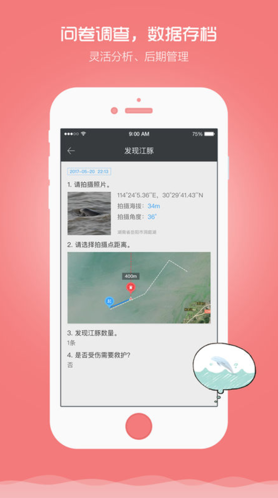
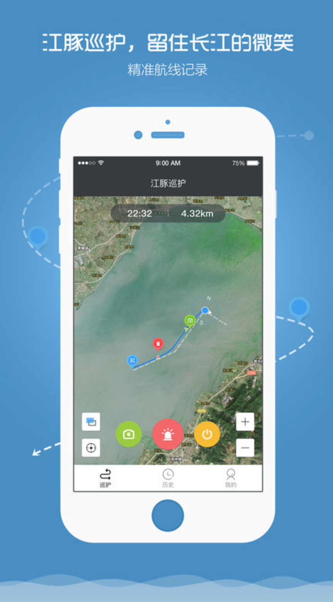

<!DOCTYPE html>
<html>
	<head>
		<meta charset="utf-8" />
		<title>Yangtze River Dolphin</title>
		<link rel="stylesheet" href="css/reset.css" />
		<link rel="stylesheet" href="css/index.css" />
		<script type="text/javascript" src="js/jquery-1.9.1.min.js" ></script>
	</head>
	<body>
		<div class="top_fixed">
				<div class="top_fixed_box">
					<div class="three_left">
						
					</div>
					<div class="three_right">
						<a href="index.html">Yangtze River Dolphin</a></p>

					</div>
				</div>
		</div>			
	<div class="seven">
			<div class="seven_box">
				<div class="seven_show">
					<p class="title">
						Dolphins in the River
					</p>
					<p class="subtitle">
						chapter one_Keep the Smile of Yangtze River_Jessie Xiang
					</p>
					<p class="seven_show1">In order to facilitate the patrol team and volunteers to perform tasks on the water, the Yangtze River Ecological 
Protection Foundation and the World Natural Organization, Wuhan Heda Technology Co., Ltd. jointly developed 
a mobile application called “River Dolphin Keeper.” (江豚管家)</p>
				</div>
			</div>		
	</div>
	<div class="eight">
		<div class="eight_box">
			<div class="eight_imggroup">
				
				
				
				
			</div>
		<div class="clear"></div>	
		<p class="eight_one">The app offers on Android and Apple's two system platforms, and almost all smartphones can be downloaded 
for free. Its interface is similar to iNaturalist. You can upload photos taken by observers anytime, anywhere, and 
record details such as time and place. Its main functions include recording reports of injured river dolphins and 
illegal fishing practices. If you observe the appearance of wild river dolphins, you need to choose the number of 
them, whether there are mother and child, and whether they are injured or not.</p>	
		<p>Through this mobile phone application, the government's fishery administration hopes that the “River Dolphin 
Keeper” can help some of the “converted” fishermen transform to "fish-protectors." On the other hand, they also 
hope to establish a social participatory patrol system to compensate for the shortage of the number of government staff and NGO volunteers.</p>
		<p>If you are an ordinary citizen and want to experience being a patrolman while visiting the Yangtze River, you can 
click to start recording your route on the river. If you are very fortunate to have observed the river dolphin, you 
can upload your "observer report" to the network in detail.</p>
		<p>Calling the public to join the collection and observation of the information on the wild finless porpoise is the 
purpose of this app design. What is slightly unsatisfactory is that all data will be unilaterally uploaded to a 
non-public platform, perhaps the government fishery department. Ordinary app users can only see their own 
data records and can not see the data shared by other users. However, this may also be safe. After all, people 
who are not good at the river dolphins will not find the location where them frequently appears.</p>
		<p>Ships like illegal fishing and illegal sand digging, in order to avoid the patrol team, usually fight at night, avoiding 
the time of supervision during the day. However, if ordinary citizens observe this kind of behavior, they can 
picture and report illegal activities through the "River Dolphin Keeper."</p>
		<p>In addition to the use of mobile phones to invite citizens to participate in the protection of the river dolphins, the 
organization also united a socially responsible company to promote the endangered state of the river dolphin. 
Alashan SEE Ecology Association and the CCF Yangtze River Ecological Protection Fund collaborated with a 
shared bicycle company to launch 1012 shared bicycles with the image of river dolphin on October 24, 2018, 
the International Freshwater Dolphin Day. When the citizens walked on the street riding the "River Dolphin 
Bike," the road people had the opportunity to see the smiling face of dolphins.</p>
		<p>China has an old four-character word that is dedicated to the New Year's greetings and is read as "Nian Nian 
You Yu." Moreover, Chinese should be sure to put a fish dish on the New Year's table, which means every year 
we have Yu(fish) to eat. Yu is the pronunciation of fish in Chinese and the same sounds as "the surplus, abundant harvest."</p>
		<p>Modern people have been able to eat fish dishes very easily, but with the destruction of the water ecological 
environment, our once huge freshwater fish resource gene pool is gradually reducing its diversity. The result of 
being too greedy and plundering is that we gradually lose our “Yu,” losing our once rich and diverse aquatic 
world. For the hunters of the Yangtze River, the river dolphins gradually lost their Yu too, losing their food and 
homes, and thus faced the danger of extinction.</p>
		<p>Give the river dolphins a healthy and safe home, and let them eat well, which could equal that the ecological 
environment of the Yangtze River has reached the best state. These days will also mean that there is no shortage of fish in the river, and the fishermen can also fish more safely and legally, without having to sneak up with 
the patrol team and volunteers.</p>
		<p>If we can keep the smile of river dolphins this time, we can also keep the smile of our mother river and keep the 
smile of our children who will live along the Yangtze River generations after generations.</p>
		<p class="title">Go to another chapter</p>
		<p class="mask">
			<a  href="xq1.html"><span>Dolphins in the River</span>
			<a  href="xq2.html"><span>Symbiotic Relationship</span></a>
			<a class="active" href="xq3.html"><span>Digital Management & Corporate Publicity</span></a>
		</p>
		</div>
	</div>		
	</body>
</html>
